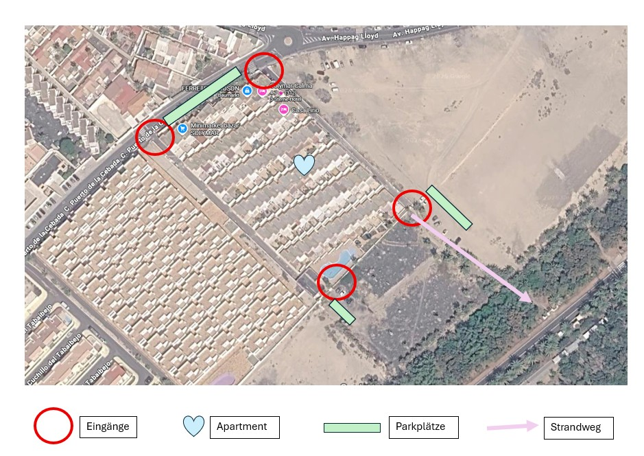

📍 Adresse & Anfahrt 📍 Address & Directions 📍 Adres i dojazd
Solymar Calma A25
SolymarCalma HRE
C. Puerto de la Cebada, 1
35627 Costa Calma, Las Palmas, Spanien
SolymarCalma HRE
C. Puerto de la Cebada, 1
35627 Costa Calma, Las Palmas, Spain
SolymarCalma HRE
C. Puerto de la Cebada, 1
35627 Costa Calma, Las Palmas, Hiszpania
📍 Google Maps öffnen 📍 Open Google Maps 📍 Otwórz Google Maps
Hinweis: Parkplätze sind auf der Straße oder links neben der Anlage verfügbar. Die Einfahrt befindet sich nach dem Kreisverkehr etwas weiter unten. Insgesamt gibt es vier Zugänge zur Anlage – jeweils zwei oben und zwei unten. Note: Parking is available on the street or next to the complex. The entrance is slightly downhill after the roundabout. There are four entrances – two at the top and two at the bottom. Parkowanie możliwe na ulicy lub na polu obok obiektu. Wejście znajduje się nieco niżej za rondem.

📶 WLAN 📶 WiFi 📶 WiFi
🔑 Schlüssel 🔑 Key 🔑 Klucz
Der Schlüssel wird vor Ankunft übergeben. The key will be handed over before arrival. Klucz zostanie przekazany przed przyjazdem.
🗑️ Mülltrennung 🗑️ Waste separation 🗑️ Segregacja śmieci
Im Gang stehen Mülltonnen (alles gemischt). Außengänge: Glas, Plastik und Papier. Inside corridor: mixed waste. Outside: glass, plastic, paper. Korytarz: odpady zmieszane. Zewnętrzne kosze: szkło, plastik, papier.
🐜 Insekten 🐜 Insects 🐜 Owady
- Um Insektenbefall zu vermeiden, bitte Essen stets verpackt aufbewahren und nicht offen stehen lassen. Please store food sealed to avoid insects. Przechowuj jedzenie szczelnie zamknięte.
- Kakerlaken können nicht zu 100 % ausgeschlossen werden, treten aber nur selten auf. Cockroaches cannot be completely ruled out, but are rare. Karaluchy mogą się pojawić, ale rzadko.
- In der Wohnung stehen Bug-Spray und Fallen bereit. Bug spray and traps are available in the apartment. W mieszkaniu są pułapki i spray.
🏊 Pool 🏊 Pool 🏊 Basen
Der Pool und die Liegen können genutzt werden. Bitte den Schlüssel immer mitnehmen. The pool and sunbeds may be used. Please always bring the key. Basen i leżaki są do dyspozycji. Zabieraj zawsze klucz.
💡 Ventilator & Licht 💡 Fan & Light 💡 Wentylator i światło
Die Deckenventilatoren haben eine eigene Fernbedienung. Wichtig: Der Wandschalter muss auf „an“ stehen, damit Strom fließt. The ceiling fans have a remote control. The wall switch must be ON. Wentylatory mają pilot. Włącznik ścienny musi być ustawiony na ON.
🧹 Vor Abreise bitte beachten 🧹 Before departure 🧹 Przed wyjazdem
- Am Ende saugen und ggf. durchwischen. Vacuum and mop if needed. Odkurz i w razie potrzeby umyj podłogę.
- Toilette bitte reinigen. Clean the toilet. Wyczyść toaletę.
- Bettwäsche abziehen und in den Wäschekorb legen. Remove bed linen and put it into the basket. Zdejmij pościel i włóż do kosza.
- Fenster, Balkontüren etc. schließen. Close windows and doors. Pozamykaj okna i drzwi.
- Den großen Schirm in den Wintergarten stellen (Druckknopf-Arretierung in der Mitte). Store the umbrella in the winter garden. Schowaj parasol do ogrodu zimowego.
- Alle persönlichen Gegenstände einsammeln. Collect all personal belongings. Zabierz swoje rzeczy.
- Elektrische Geräte ausschalten. Switch off all electrical devices. Wyłącz wszystkie urządzenia elektryczne.
📞 Wichtige Kontakte 📞 Important contacts 📞 Ważne numery
Notruf: Emergency call: Telefon alarmowy: 112
091 – Policía Nacional
062 – Guardia Civil
061 – Medizinische Notfallhilfe
091 – Policía Nacional
062 – Guardia Civil
061 – Medical emergency
091 – Policja
062 – Guardia Civil
061 – Pomoc medyczna